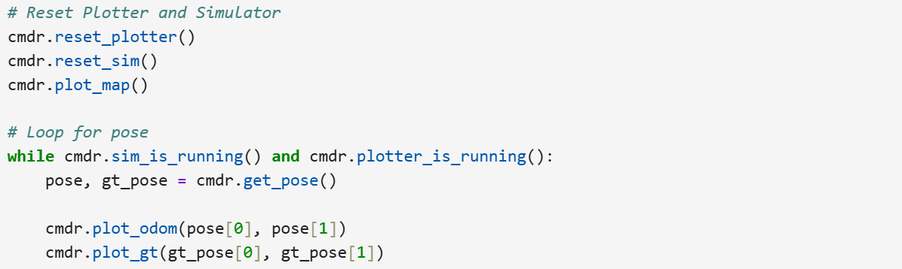
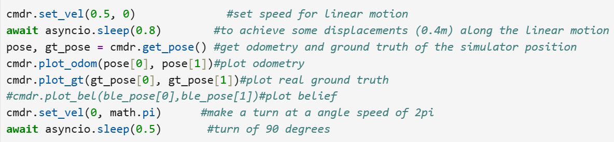
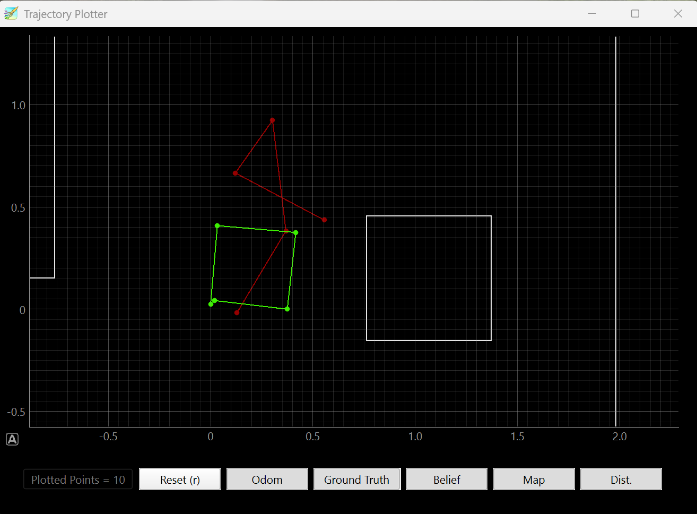

Lab 10：Grid Localization using Bayes Filter (sim)
Objective
The objective of this lab is to

I used to only plot without movement command which leads to plot seeing no movement of the robot but repeating of the same location. Therefore, I have movement command together with plot happening in the same timelines with code snippets like below repeating.

After that, I added the plotting the dot at the beginning of the motion to enable the first line of motion gets plotted without which plotting is only composed of three lines. So that I get graph such as below: as we can see, there is quite difference between odometry and ground truth. Odometry uses sensor data to estimate the change while Ground Truth basically is the direct accurate measurement of the position in this case.


To enable robot to do a series of things step by step, I incorporated a switch-mode
to have it do each thing step by step:
APPROACH enables robot to approach the wall
to distance as close as 1 ft which is similiar to lab 5 and sets the goal of final orientation
as 180 degrees from the initial orientation. To ensure that the switching happens only
the robot at the appropriate position, switching of modes is inside the if statement for
position check.
TURN ALIGH was evolved from a function of make a turn and a function
of orientation alignment like lab 6. I was experimenting with two modes doing these functions
following each other. However, the control of turning 180 degrees uses the orientation adjustment
code snippet inevitably which is a bit redunant to the second function. Therefore, one mode should be
able to achieve the goal successfully.
EXIT STRAIGHT only do the time check that
it finished the orientation adjustment and approximately 2 seconds later and then stop the forward motion.


However, when it got implemented in the run, it occurred that robot cannot precsely identify the target orientation of 180 degrees from original orientation.Below are graphs from collected data points: Distance(mm), Speed with P control, and angle (degrees) VS time(s).
Watch the video of car failing to return back...Reference
Thanks to TA Jack Long for discussion about clearer structure of switching modes.
I used chatGpt for debugging and brainstorming potential error happening.